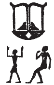
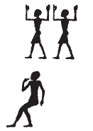
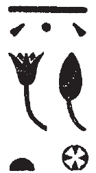

Column 5 (230-238)
Esna 230
- Location: Column 5
- Date: Probably Trajan
-
Hieroglyphic Text
- Bibliography:
Answ.t-bỉty
ḫʿỉ m nḫb
m šȝʿ ḫpr
qmȝ pȝwty.w
m zp tpy
wbn m sšn
psḏ m nḫb
ḫpr=f m Rʿ
m qȝy qȝ
ḥr wḏ-mdw
m tȝ r-ḏr=f
ẖnmw-Rʿ nb sḫ.t
A The King of Upper and Lower Egypt,
who appeared from the lotus
at the beginning of creation;
who created the primeval ones
in the initial moment;
who arose from lotus bud,
who shines from the lotus.
He came into being as Re,
in the High Mound (of Hermopolis),
issuing commands
to the entire world:
Khnum-Re Lord of the Field.
Bnsw.t-bỉty
tȝ-ṯnn wr
ḫpr m ḥȝ.t
tmȝ.t wr.t ḥnʿ=f
qrḥ.t ʿnḫ.t
sḫpr(.t) ḫprw
mn=s ḥȝ=f
m rn=s n Mnḥy.t
Nb.tw kȝ.t(w) r rn=s
pr(.t) r-ḥȝ.t
nṯr.w ḥr sšm=f
m ḥb=f nfr
n ḥb-Rnn.t
zȝ=f mỉt.t m hrw pn
ẖnmw-Rʿ nb tȝ-sn.t
B The King of Upper and Lower Egypt,
Tatenen the great,
who came about in the beginning,
while the great Mother was with him,
(namely) the living serpent
who produced all creation.
She remains (mn) around (ḥȝ) him,
in her name of Menhyt (Mnḥy.t),
also called Nebtu by name.
Coming forth to the front,
the gods conduct him
in his good festival
of the Renenutet Festival;
his son likewise on this day ( Pakhons 1):88
Khnum-Re89 Lord of Esna.
Esna 231
- Location: Column 5
- Date: Probably Trajan
-
Hieroglyphic Text
- Bibliography: None
Cartouches of Heka the child, with figures of Khnum and Horus Behedety.
Heka’s name is spelled:
 2, 11: ḥb + qȝ;  5, 11: ḥʿʿ + qȝ
Esna is also spelled:
 3, 10: sšn + nḥb
Esna 232
- Location: Column 5
- Date: Trajan
-
Hieroglyphic Text
- Bibliography: Sauneron 1982, pp. 21-24, 200-202. See also Tempeltexte 2.0
1n ẖnmw
spr=f nỉw.t=f
m pḥwy rnp.t
ḥr-sȝ ỉr sbỉ.w=f
m tm wn
1 For Khnum,
he returns to his city
at the end of the year,
after rendering his rebels
non-existent.
n ẖnmw
ʿq ẖȝ.wt ỉdḥw
m grḥ nb
bʿḥ.tw n=f ḥḏ.w
For Khnum
who enters the lagoons of the Delta
every single night,
for whom milk flows.
n ẖnmw
ỉnỉ Pr-nṯr m nḏm-ỉb
wdn.tw n=f ỉḫt
For Khnum
who reaches Per-netjer in joy,
for who one presents offerings.
n ẖnmw
zmȝ-mȝʿ.t
mrỉ mȝʿ.t
šȝʿ.tw ỉr(.t) 2mȝʿ.t
n kȝ=f
For Khnum,
Companion of Maat,
who loves Maat,
for whose Ka one first began
2 performing Maat.
n ẖnmw p(ȝ) nḫy nfr
n nṯr.w rmṯ.w
nḏty n tȝ r-ȝw=f
For Khnum the Good Protector
of gods and humans,
guardian of the entire earth.
n ẖnmw p(ȝ) nfw nfr
ḥry-ỉb ỉr.t-Ỉtm(?)
ỉry-ḥmw sqd Rʿ
For Khnum the good wind,
within the Eye of Atum(?),90
pilot who sails Re.
n ẖnmw
p(ȝ) mnỉw nfr n tpy.w-tȝ
ỉmy-r’ ỉḥ.w
wr ỉḥ.w
For Khnum
the good herdsman of the living,
chief of cattle,
great of cattle.
n ẖnmw p(ȝ) ʿȝ
ḥry-ỉb ḥw.t-bȝ.w
ỉmn ḫprw
3ḏsr sštȝ.w
For Khnum the great
within the Temple of the Bas,
hidden of manifestation,
3 sacred of mysterious forms.
n ẖnmw
wr bȝw n šmʿ-mḥw
tȝ r-ḏr=f ẖr ḥry.t=f
For Khnum
great of terror in Upper and Lower Egypt
the entire earth bears fear for him.
n ẖnmw nb Pr-nṯr
tȝ r-ḏr=f ḥr.tw r bwt=f
r tm ḫp(r) ḫrwy.t ỉm=sn
For Khnum Lord of Per-Netjer,
the entire earth avoids his abomination
lest a catastrophe occur among them.
n ẖnmw ʿȝ pḥty
rw ʿȝ šfy.t
sḫm bȝw=f
r ḫfty=f
ỉq(r) 4ḫpš.wy
nḫt-ʿ
ʿ.wy=k rwḏ(.w)
r sḫr sbỉ.w
For Khnum great of strength,
lion, great of prestige,
whose terror is powerful
against his enemy.
Excellent(?)91 4 of strong arms,
mighty of arm,
your arms are firm
to fell the rebels.
n ẖnmw
bỉk šps
nsw.t nṯr.w
sʿnḫ rmṯ.w
For Khnum
august falcon,
king of the gods,
who enlivens people.
n ẖnmw-Rʿ
nb bw ỉḫt
wr kȝw
ʿȝ ḏfȝw
nb ʿnḫ
snb r-ḫt=f
For Khnum-Re
Lord of the place of offerings,
great of food,
plentiful of provisions,
Lord of life,
good health reports to him.
n ẖnmw
bȝ wr ḥry-ỉb ʿ.t-bȝ
rdỉ ỉz-nỉȝ n nṯr.w
For Khnum
great Ba within Chamber of the Ba,
who gives pleasant air to the gods.
n ẖnmw-Šw
nb [ỉm]nt.t
sʿnḫ Wsỉr m ỉmḥ.t
For Khnum-Shu
Lord of the [We]st,
who enlivens Osiris in the cavern.
n ẖnmw ḫnty nb-ʿnḫ
snsn ḥtpty.w
For Khnum foremost of Neb-ankh,
who lets the blessed dead breathe.
n ẖnmw-Rʿ nb Qbḥw
sṯỉ ḥʿpỉ m ṯpḥ.t=f
For Khnum-Re Lord of the Cataract,
who surges Hapi from his grotto.
n ẖnmw-Rʿ nb tȝ-sn.t
nṯr ʿȝ nb sḫ.t
For Khnum-Re Lord of Esna,
great god, Lord of the Field.
n ẖnmw-Rʿ nb sḫ.t
nṯr ʿȝ nb 6tȝ-sn.t
ẖnmw(?) ỉr ẖnm.w 7
bȝ šps ỉr bȝ.w
For Khnum-Re Lord of the Field,
great god, Lord 6 of Esna,
Khnum92 who made the 7 Khnums,
august Ba who makes the Bas.
n ẖnmw
bȝ n Šw
ḥȝ.t nṯr.w
ḫpr ẖr-ḥȝ.t
ỉr p.t tȝ
mw.w ḏw.w
r’-ʿ.wy(=f)
grg spȝ.wt nỉw.wt
ṯȝw n ʿnḫ
r fnḏ nṯr.w nṯry.t
ʿḥʿ m nsw.t
n ms.w=f
nb ʿnḫ
sʿnḫ nty nb
For Khnum
the Ba of Shu,93
first of the gods,
who came about in the beginning,
who made heaven, earth,
waters, and mountains;
(whose) activity
is populating nomes and cities.
The breath of life
for the nose of gods and goddesses;
he who stands up as king
of his children.
Lord of life,
who enlivens all that is.
7n ẖnmw
bȝ n Rʿ
sḥḏ tȝ.wy
7 For Khnum
the Ba of Re,
who illumines the two lands.
n ẖnmw
bȝ n Wsỉr
pr Ḥʿpỉ m-ḫt=f
For Khnum
the Ba of Osiris,
Hapi comes forth after him.
n ẖnmw
bȝ n Gbb
srwḏ tȝ
m rḏw=f
For Khnum
the Ba of Geb,
who makes the earth thrive (srwḏ)
with his efflux (rḏw).
n ẖnmw-Rʿ nb tȝ-sn.t
nṯr ʿȝ nb Snm(.t)
For Khnum-Re Lord of Esna,
great god, Lord of Bigga.
n ẖnmw-Rʿ nb snm.t
nṯr ʿȝ (nb) tȝ-sn.t
For Khnum-Re Lord of Bigga,
great god, (Lord of) Esna.
n ẖnmw-Rʿ
nb Qbḥw
8nṯr ʿȝ nb tȝ-sn.t
For Khnum-Re
Lord of the First Cataract,
8 great god, Lord of Esna.
n ẖnmw-Rʿ ḫnt ḫnt-tȝ
nṯr ʿȝ nb Qbḥw
For Khnum-Re foremost of Khent-ta,
great god, Lord of the First Cataract.
n ẖnmw-Rʿ
nb Qbḥw
ḫnt ḫnt-tȝ
For Khnum-Re
Lord of the First Cataract,
foremost of Khent-ta.
n ẖnmw ḫnty ḫnt-tȝ
nṯr ʿȝ
nb šmʿ-mḥw
For Khnum foremost of Khent-ta,
great god,
Lord of Upper and Lower Egypt.
n ẖnmw-Rʿ nb Ỉwny.t
nṯr ʿȝ nb šȝỉs-ḥtp
For Khnum-Re Lord of Iunyt,
great god, Lord of Shas-hotep.
n ẖnmw-Rʿ nb šȝs-ḥtp
nṯr ʿȝ nb Ỉwny.t
For Khnum-Re Lord of Shas-hotep,
great god, Lord of Iunyt.
n ẖnmw-9-Šw
zȝ Rʿ
pȝ ṯȝy nfr
qn ṯnr
ʿȝ pḥty
sḫr ḫfty
For Khnum-9-Shu,
son of Re,
the beautiful male,
mighty and valiant,
great of strength,
who fells the enemy.
n ẖnmw
bȝ šps n Wsỉr
ḫnty ḥw-nty
For Khnum
the august Ba of Osiris,
foremost of ḥw-nty.94
n ẖnmw-Rʿ nb ḥr-wr
ʿȝ nḫt
ḥwỉ bṯn=f
For Khnum-Re Lord of Herwer,
great of victory,
who slays his rebel.
n ẖnmw nb Ỉȝ.t-rd
ḫy nfr
bnr mrw(.t)
For Khnum Lord of Iat-red,
the beautiful child,
sweet of love.
n ẖnmw nb šnʿ-ẖn
nb ỉhȝy 10ʿšȝ
For Khnum Lord of šnʿ-ẖn,
lord of plentiful 10 jubilation.
n ẖnmw ỉnỉ-ḥr.t
Ḥr ṯmȝ-ʿ
ỉnỉ sn.t=f
wn(.t) ḥr.tw
For Khnum-Onuris (Ỉnỉ-ḥr.t),
Horus, valiant of arm,
who brings back (ỉnỉ) his sister
who had been far away (ḥr.tw).
n ẖnmw-ḫnty-wȝr=f
sḫt sbỉ.w m r’-ỉȝd.t=f
ḫnt sḫ.t Ḫmw
For Khnum-ḫnty-wȝr=f
who traps the rebels in his net,95
within the Field of Letopolis.
n ẖnmw
ḫnty sḥ-nṯr
stwḫ nfrw
wrḏ-ỉb
For Khnum,
foremost of the Divine Tent,
who mummifies the ‘beauty’
of Weary of Heart (Osiris).
11n ẖnmw
bȝ m kȝr=f
ḫnty sḥ n wnm
zmȝ nsw.t ỉḫt
m-bȝḥ=f
11 For Khnum
Ba in his shrine,
within the dining hall;96
the king assembles offerings
before him.
n ẖnmw sḫt-šzp=f
sḥḏ kkw
m ḥ(ȝ)y=f
For Khnum who Weaves his Light,
who illumines darkness
with his radiance.
n ẖnmw
ʿȝ bȝw m-m nṯr.w
ḏsr rn.w m spȝ.wt nỉw.wt
For Khnum
great of power among the gods,
sacred of names in nomes and cities.
n ẖnmw
bỉk šps
m ȝḫ.t-nḥḥ
ḥry-ỉb ʿ-wr m Wȝs.t
For Khnum
august falcon
in the Horizon of Eternity,
within the great chamber in Thebes.97
n ẖnmw
nṯr ʿȝ m Ḫtm
12wr m Ỉwnw
For Khnum
great god in Khetem,
12 great one in Heliopolis.
n ẖnmw
Šw tfn.t m mn-s.wt
For Khnum
Shu and Tefnut in Men-sut.
n ẖnmw
sḫm šps
ḫp(r) ḏr-ʿ
m ṯpḥ.t-ḏȝ.t
m Ỉnb-ḥḏ
For Khnum
august image,
who came about long ago,
in the Blocked Cavern
in White Walls (Memphis).
n ẖnmw Mnḥy.t m tȝ-sn.t
ṯnn pw ḥnʿ N.t
For Khnum and Menhyt in Esna,
that means Tatenen with Neith.98
n ẖnmw Nb.t-ww m Pr-nṯr
Šw 13pw ḥnʿ tfn.t
For Khnum and Nebtu in Per-netjer,
that means Shu 13 and Tefnut.
n ẖnmw
rw.ty
m ḥw.t-ṯȝ.wy
For Khnum
the two lion children
in the Temple of the Chicks.
n ẖnmw
sr ʿȝ wr šps
rdỉ ṯȝw n bw nb mry=f
rsy mḥy ỉmnty ỉȝbty mỉt.t
For Khnum
the very great, august ram,99
who gives air to whomever he desires:
south, north, west, east likewise.100
n ẖnmw
m rn.w=f nb.w
For Khnum
in all his names.
n ẖnmw
m ḫprw=f nb.w
For Khnum
in all his manifestations.
14n ẖnmw
m sštȝ.w=f nb.w
14 For Khnum
in all his secret forms.
n ẖnmw
m s.t=f nb
For Khnum
in all his places.
n ẖnmw
m bw nb
mr kȝ=f ỉm
dỉ=s(n) ʿnḫ-ḏd-wȝs nb
snb nb
n zȝ-Rʿ (dryns (nty)-ḫwỉ)|
ʿnḫ-wḏȝ-snb
mỉ Rʿ ḏ.t
For Khnum
in every place
his Ka desires to be.
May they give all ʿnḫ-ḏd-wȝs,
all health,
to the Son of Re (Trajan Augustus)|,
may he live, prosper, and be healthy,
like Re, forever!
Esna 233
- Location: Column 5
- Date: Probably Trajan
-
Hieroglyphic Text
- Bibliography: Sauneron 1982, pp. 24-27, 64-66. See also Tempeltexte 2.0
- Parallels: Multiple epithets occur verbatim in the great hymn to Menhyt: Esna 251.
14ỉr(.t) p(ȝ) wdn n Mnḥy.t
m hrw pn mỉ rʿ-nb
ḏd-mdw
14 Performing the litany of Menhyt
on this day like every day.
Words spoken:
15wdn n Mnḥy.t wr.t
nb.t ḫnt-tȝ
m rn(.w)=s nb(.w)
ḥr-tp ʿnḫ-wḏȝ-snb
n nsw.t-bỉty
(pr-ʿȝ ʿnḫ(.w) ḏ.t)|
15 Offering for Menhyt the great,
Lady of Khent-ta,
in all her names,
in addition to the life, prosperity, health
for the King of Upper and Lower Egypt,
(Pharaoh, living forever)|
n Mnḥy.t wr.t
nb(.t) ḫnt-tȝ
For Menhyt the great,
Lady of Khent-ta.
n Mnḥy.t
nb.t wp-tȝ m tȝ-sn.t
For Menhyt,
Lady of Wep-ta in Esna.
n Nb.t-ww
nb(.t) tȝ-sn.t
For Nebtu,
Lady of Esna.
n Nb.t-ww
ỉr.t-Rʿ ḥr.t s.t wr.t
For Nebtu,
Eye of Re upon the Great Throne.
n Mnḥy.t
16nb(.t) hn
For Menhyt,
16 Lady of the chest.
n Mnḥy.t
nb.t tmm.w
For Menhyt,
Lady of all people.
n Mnḥy.t
mḥn.t Tm.t
For Menhyt,
uraeus, Temet.
n Mnḥy.t
nb.t pr-wr
For Menhyt,
Lady of the Per-wer.
n Mnḥy.t
nb.t pr-nsr
For Menhyt,
Lady of the Per-neser.
n Mnḥy.t
nb(.t) pr-nw
For Menhyt,
Lady of the Per-nu.
n Mnḥy.t
nb.t wrr.t
ḥr.t-ỉb ʿḥ wr
For Menhyt,
Lady of the double crown
within the great palace.
n Mnḥy.t-N.t
17wr wr.w
For Menhyt-Neith,
17 greatest of the great.
n Mnḥy.t-Spd.t
nb(.t) tp-rnp.t
For Menhyt-Sothis,
Lady of the New Year.
n Mnḥy.t
ḥȝy(.t) m ḥʿpỉ
For Menhyt,
who floods as the Inundation.
n Mnḥy.t
wȝḏwȝḏ(.t) šny.w-tȝ
For Menhyt,
who makes plants verdant.
n Mnḥy.t
nb(.t) pȝwty.w
For Menhyt,
Lady of the Primeval ones.
n Mnḥy.t
nb.t wȝḏ
For Menhyt,
Lady of the wȝḏ-hall.
n Mnḥy.t
m mḥn.t 18m tp n Rʿ
For Menhyt,
as the uraeus 18 on the head of Re.
n Mnḥy.t
ḥȝy(.t) m šww
For Menhyt,
who shines as the sun.
n Mnḥy.t
Rʿy.t sḥḏ(.t)
For Menhyt,
Rayet, who illumines the two lands.
n Mnḥy.t
ḥȝy(.t) m mḥy.t
For Menhyt,
who blows as the north-wind.
n Mnḥy.t
mḥy.t nfr.t
For Menhyt,
the good north-wind.
n Mnḥy.t
wrh n=s Šw
For Menhyt,
for whom Shu dances.
n Mnḥy.t
ḫʿỉ(.t) m bȝw=s
For Menhyt,
who appears in her power.
n Mnḥy.t
ḫnt(.t) ḥw.t-ỉt
For Menhyt,
within Temple of the Father.
n Mnḥy.t
ḫnt(.t) ḥw.t-Mw.t
For Menhyt,
within Temple of the Mother.
n Mnḥy.t
ḫnt(.t) ḥȝ.t-nỉw.wt
For Menhyt,
within First of the Cities (Elephantine).
n Mnḥy.t
ḫnt(.t) sḫ.t
For Menhyt,
within the Field.
n Mnḥy.t
ḫnt(.t) Pr-ẖnmw
For Menhyt,
within Per-Khnum.
n Mnḥy.t
ḫnt(.t) Pr-nṯr
For Menhyt,
within Per-netjer.
20n Mnḥy.t
wsr.t m tȝ-šmʿ
For Menhyt,
Mighty one in Upper Egypt.
n Mnḥy.t
sḫm.t m tȝ-mḥw
For Menhyt,
Sakhmet in Lower Egypt.
n Mnḥy.t
Wȝḏy.t N.t
m s.t=sn nb.w
For Menhyt,
Wadjyt, Neith,
in all their places.
n Mnḥy.t
nb.t ʿnḫ-tȝ.wy
For Menhyt,
Lady of Ankh-tawy (Memphis).
n Mnḥy.t
nb.t ḥqȝ-ʿnḏ
For Menhyt,
Lady of Heqa-andj (Heliopolis).
n Mnḥy.t
nb.t N.t
For Menhyt,
Lady of the Neith nome.
n Mnḥy.t
nb.t Ỉwnw-šmʿ
For Menhyt,
Lady of Upper Egyptian Heliopolis.
21n Mnḥy.t
Mw.t wr.t
nb.t Ỉšrw
21 For Menhyt,
Mut the great,
Lady of the Isheru lake.
n Mnḥy.t
[…]
For Menhyt
[…]
n Mnḥy.t
mnḥ(.t) tp.w
n ḫfty.w=s
For Menhyt,
who chops off the heads
of her enemies.
n Mnḥy.t
dr(.t) šsr(.w)
r ḫfty.w nb(.w) nw Rʿ
For Menhyt,
who sends arrow(s)
against all the enemies of Re.
n Mnḥy.t
ḥwỉ(.t) ḫfty n Ḥr=s
For Menhyt,
who slays the enemy of her Horus.
22n Mnḥy.t ʿḥȝ.t
ḥwỉ(.t) ẖȝk.w-ỉb.w
22 For Menhyt the warrior,
who slays the disaffected ones.
n Mnḥy.t Mȝfd.t
sḫr(.t) ḫfty.w=s
For Menhyt-Mafdet,
who fells her enemies.
n Mnḥy.t
Rȝy.t wr.t
ḥnw.t tȝ.wy
For Menhyt,
Rayet the great,
Mistress of the Two Lands.
n Mnḥy.t
ʿȝ sḫr.w m qbḥ.wy
For Menhyt,
great of plans in the two lands.
n Mnḥy.t-Sḫm.t
sḫm(.t) (m) rky.w
For Menhyt-Sakhmet,
who has power over the rebels.
n Mnḥy.t-Bȝst.t
wbd(.t) ḫfty=s
For Menhyt-Bastet,
who burns her enemy.
n Mnḥy.t-Wȝḏy.t
wḏ(.t) ʿnḫ
n mr=s
For Menhyt-Wadjyt,
who bestows life
to whomever she pleases.
n Mnḥy.t-Ḥdd.t
ḥʿʿ.tw n mȝȝ=s
For Menhyt-Hededet,
who one rejoices to see.
n Mnḥy.t-Tfn.t
ḥr.t-tp n.t Rʿ
For Menhyt-Tefnut,
uraeus of Re.
n Mnḥy.t
ỉr.t-Rʿ 24wḏ(.t) mȝwy
For Menhyt,
Eye of Re, 24 who emits radiance.
n Mnḥy.t
Rpy.t wr.t
For Menhyt,
great Repit.
n Mnḥy.t
wnm(.t) ỉḫt nb.w rkḥ
For Menhyt,
who eats all things grilled.
n Mnḥy.t
wnm(.t) wȝḏ r mr=s
For Menhyt,
who eats raw meat as she pleases.
n Mnḥy.t
ḫȝḫ(.t) wpwty.w
For Menhyt,
who dispatches the messenger demons.
n [M]n[ḥy.t]
dỉ(.t) ʿnḫ
n nty ḥr mw=s
For [Me]n[hyt],
who gives life
to whomever is loyal to her.
n Mnḥy.t
25ḫwỉ(.t) nỉw.t=s
For Menhyt,
25 who protects her city.
n Mnḥy.t
nb.t ḫnt-tȝ
ỉr.t-Rʿ Bȝst.t
For Menhyt,
Lady of Khent-ta,
Eye of Re, Bastet.
n Mnḥy.t
nb.t ḫnt-tȝ
r-mn pḥw
ḫnt.t sḫ.t
For Menhyt,
Lady of Edge of the Earth
all the way to the Pehus,101
foremost of the Field.
n Mnḥy.t
nb.t Ỉwny.t
For Menhyt,
Lady of Iunyt.
n Mnḥy.t
ỉỉ(.t) ḥnʿ sn=s Šw
m […]
For Menhyt,
who comes with her brother Shu
as/in/from […]
n Mnḥy.t
nb.t tḫ
ʿšȝ ḥb.w
ḥnk.tw n=s mnw
For Menhyt,
Lady of Intoxication,
numerous of festivals,
to whom one offers the mnw-drink.
26n Mnḥy.t
Šw ḥnʿ=s
r sḥtp=s
26 For Menhyt,
Shu is with her,
in order to pacify her.
n Mnḥy.t
m rn.w=s nb.w
For Menhyt,
in all her names.
n Mnḥy.t
m ḫprw.w=s nb.w
For Menhyt,
in all her forms.
n Mnḥy.t
m sštȝ.w=s nb.w
For Menhyt,
in all her secret images.
n Mnḥy.t
m s.wt=s nb.w
For Menhyt,
in all her thrones.
n Mnḥy.t
m bw.w nb.w
mr kȝ=sn ỉm
27dỉ=sn ʿnḫ-ḏd-wȝs nb
snb nb
n zȝ-Rʿ
(pr-ʿȝ ʿnḫ(.w) ḏ.t)|
mỉ Rʿ ḏ.t
For Menhyt,
in all places,
where their Kas love to be.102
May they give all ʿnḫ-ḏd-wȝs,
all health,
to the son of Re,
(Pharaoh living eternally)|
like Re, forever.
Esna 234
- Location: Column 5
- Date: Trajan
-
Hieroglyphic Text
- Bibliography: Sauneron 1959, pp. 95-96; Sauneron 1982, p. 27. See also Tempeltexte 2.0
27ỉr(.t) p(ȝ) wdn Nb.t-ww
m hrw pn mỉ rʿ-nb
ḏd-mdw
27 Performing the litany of Nebtu
on this day like every day.
Words spoken:
wdn n Nb.t-ww
nb(.t) tȝ-sn.t
m rn(.w)=s nb.w
ḥr-tp ʿnḫ[-wḏȝ-s]nb
n nsw.t-bỉty
nb-tȝ.wy
(dryns nty-ḫwỉ)|
Offering for Nebtu the great,
Lady of Esna,
in all her names,
in addition to the life, [prosperity, hea]lth
for the King of Upper and Lower Egypt,
Lord of the Two Lands,
(Trajan Augustus)|
(1)
28n Nb.t-ww
nb(.t) tȝ-sn.t
28 For Nebtu,
Lady of Esna.
(2)
n Nb.t-ww
ỉr.t-Rʿ ḥr(.t) s.t
For Nebtu,
Eye of Re, upon the throne.
(3)
n Nb.t-ww
ḥr.t-ỉb ḥw.t-bȝ.w
For Nebtu,103
within the Temple of the Bas.
(4)
n Nb.t-ww
nb(.t) Ỉwny.t
ḥr(.t) kȝw
For Nebtu,104
Lady of Iunyt,
in charge of food.
(5)
n Nb.t-ww
nb(.t) ḥw.t-ỉt
ḥnw.t nfr.w(t)
For Nebtu,105
Lady of the Temple of the Father,
Mistress of Beautiful women.
(6)
Esna 235
- Location: Column 5
- Date: Trajan
-
Hieroglyphic Text
- Bibliography: Leitz 2021b, pp. 139-140 (non vidi). See also Tempeltexte 2.0
- Compare: Esna 253
Formula
1mn n=k ỉdḥ.w
wȝḏ.w […]
[…]
2r wȝḏ.w n ʿnḫ.w
[…]
1 Receive the marsh plants,
papyri […]
[…]
2 as papyri for the living
[…]
The King
3nsw.t-bỉty
nb tȝ.wy
(ȝwtwkrtwr kysrs)|
4zȝ Rʿ
nb ḫʿ(.w)
(tryns nty-ḫwỉ)|
5wḥʿ qn m sḫ.t
sḫt rȝ.w n ỉt=f
6nṯr nfr
ỉmy-r’ ḫnty-š
srwḏ ḥsp.w
nb wȝḏ.w
sʿnḫ sšn.w
šzp ỉȝd.t
sḫt rȝ.w
ḥtr wḏḥ.w
m-bȝḥ wbn m nḫb
ỉdḥ.w r nw=f
nḫb r tr=f
rȝ.w r dmḏ.t=s
n šzp nswy.t
(trʿns nty-ḫwỉ)|
3 The King of Upper and Lower Egypt,
Lord of the Two Lands,
(Autokrator Caesar)|
4 Son of Re,
Lord of Appearance(s),
(Trajan Augustus)|
5 The mighty fowler in the field,
who traps geese for his father.
6 The good god,
overseer of land administrators,
who makes gardens thrive;
lord of papyri,
who keeps lotus blossoms alive;
who grabs the trapping net,
and catches geese,
and binds bird offerings
before He who Shines from the Lotus.
Marsh plants at its time,
the lotus blossom at its season,
and geese at the appointed moment,
of inheriting kingship:
(Trajan Augustus)|
Khnum Lord of the Field
7ḏd-mdw n ẖnmw-Rʿ
nb sḫ.t
nṯr nṯry
ṯȝy nṯr.w
Rʿ ḫnty 8mȝnw
sḏ šps
wbn m nḫb
šzp tȝ.wy
m nṯr.ty=f
9ỉr ỉgb
sʿnḫ ỉd.t
snfr rnp.w nb.w
smȝ sʿnḫ
10ẖr s.t-r’=f
11dỉ=ỉ n=k wȝḏ.w nb.w
r wȝḏ ỉr.ty=k
qbḥw ẖr pr ỉm=f
7 Words spoken by Khnum-Re,
Lord of the Field,
divine god,
most male of the gods,
Re within 8 Manu;
the august child,
who rises from the lotus,
who illumines the two lands
with his divine eyes.
9 He who makes the wind,
who keeps alive the dew,
and makes all fresh plants good.
Killing and keeping alive
10 are under his authority.
11 I give you all papyrus plants,
to make your eyes green;
and Qebehu, with all its produce.
Esna 236
- Location: Column 5
- Date: Domitian (col. 4) and Trajan (col. 7)
-
Hieroglyphic Text
- Bibliography: Goyon 1997, p. 96; see also Tempeltexte 2.0
NB: This offering scene on this column is adjacent to the Laboratory inside the north wall, the place where sacred minerals, spices, and other materials were kept. For the festival context of this particular ritual at North Esna, see Goyon 1997, p. 91.
Formula
1ỉr(.t) snṯr
wpš ṯḥn
ẖr ḥȝ.t nṯr.t tn
ḏd-mdw
p.t wʿb.tw šw.tw
ḫt-mn sṯỉ m ṯḥn
2ḫft spr nṯr.t tn
r ḥw.t-nṯr=s
ẖnm=s sn=s ẖnmw
m-ḫnt sḫ.t=f
swr=f ḏsrw=s
m nỉw.wt spȝ.wt
1 Performing incense,
sprinkling faience
before this goddess.
Words spoken:
The sky is clear and empty (of clouds),
the world is strewn with faience
2 when this goddess arrives
to her temple,
to unit with (ẖnm) her brother, Khnum (ẖnmw),
within his Field.
He magnifies her sanctity
in all cities and nomes.
The King
3nsw.t-bỉty
nb tȝ.wy
(ȝwtwkrtwr gysrs)|
4zȝ Rʿ
nb ḫʿ(.w)
(twmtyns ḫwỉ)|
5ʿbw snṯr
n wr.t-ḥkȝw ʿȝ.t
nb(.t) pr-wr
6sṯỉ (ṯḥn)
n nb.t ỉmȝ.t
wṯz-nfrw
n Nbw.t
7nṯr nfr
ḥqȝ tȝ-nṯr
ḥwỉ mṯn ḥr Tfrr
ỉr snṯr n mw.t=f
kȝp ḫm.w
m sṯỉ=f
rwỉ qnd ḥr ỉb=s
ȝw-ỉb=s
m wpš ṯḥn
[…]
n mȝȝ nfrw=sn
nb ḏsr(.w)
(trʿns nty-ḫwỉ)|
3 The King of Upper and Lower Egypt,
Lord of the Two Lands,
(Autokrator Caesar)|
4 Son of Re,
Lord of Appearance(s),
(Domitian Augustus)|
5 He who purifies and makes incense
for great Werethekau,
Lady of the Per-wer;
6 who scatters (faience)
to the Lady of Grace;
who carries the perfection
of the Golden One.
7 The good god,
ruler of God’s Land,
who strikes a path to Tefrer,
who offers incense for his mother,
who fumigates the chapels
with its scent,
who repels the rage from her heart,
so her heart is glad
from sprinkling faience
[…]
from seeing their goodness.
The Lord of sanctity,
(Trajan Augustus)|
Menhyt
8ḏd-mdw n Mnḥy.t wr.t
nb(.t) ḫnt-tȝ
Tfn.t ỉw ỉb=s 9m ršw
mw.t-nṯr
tmȝ.t n Rʿ
mḥn.t n nṯr.w pȝwty.w
ỉỉ(.t) m 10Kns.t
spr(.t) r Ỉwny.t
ỉmȝ-ỉb n sn=s
ḥnʿ zȝ=s
11wḏ n=s [pẖr]-ỉb=f m-ḫt=s
r shr kȝ=s m Nb.t-ww
12ḥʿʿ n=s tȝ.wy
nhm n=s ỉdb.w
ḥng(g) 13n=s nṯr.w
m ỉỉ=s
14dỉ=ỉ n=k ḥḏ.t m Nḫn
dšr.t m P
tȝ nb […]
8 Words spoken by Menhyt the great,
Lady of Khent-ta,
Tefnut, when her heart 9 rejoices.
Mother of God,
primeval mother of Re,
uraeus of the primeval gods.
She who comes from 10 Kenset,
and arrives to Iunyt,
so her brother is delighted,
along with her son.
She ordered him to be [en]amored with her,107
in order to pacify her Ka as Nebtu.
12 The two lands rejoice for her,
the shores celebrate for her,
and the gods 13 cheer for her,
at her arrival.
14 I give you the white crown in Nekhen,
and the red crown in Pe,
every land […].
Nebtu
15ḏd-mdw n Nb.t-ww
nb(.t) tȝ-sn.t
zȝ.t Rʿ
mḥn.t m-ḥȝ.t=f
hnw=f (r)-ḏbȝ=s
16m mr=s
dwȝ s(y) nṯr.w
mỉtt rmṯ.w
m ʿȝ n bȝw=s
wr kȝ=s
r nṯr.w nṯry.t
17tȝ (r)-ḏr=f
n=s m ʿqy
ʿbw […] nṯr.w m […]
18dỉ=ỉ n=k tȝ-nṯr
ẖr ỉmỉ[=f]
Tfrr ẖr […]
15 Words spoken by Nebtu,
Lady of Esna,
daughter of Re,
uraeus upon his brow:
he makes hnw-praise about her
16 with what she loves;
gods praise her,
likewise humans,
because her power is so great;
her Ka is greatest
of gods and goddesses.
17 The entire earth
belongs to her in festival,
purified […] gods in […]
18 I give you God’s Land,
bearing what is in [it];
Tefrer bearing […]
Behind the Divinities
19[…]
wpš.n=s p.t
sḥḏ.n=s tȝ
ḥnmm.t m ks
n ḥr=s
nb(.t) snṯr
ḥnw.t wȝḏ-šmʿ
ḥnk.tw n=s kȝp.w nb
wn.n=s p.t
m ṯḥn
wpš.n=s tȝ
m […]
19 […]
as she brightened the sky,
so illumined the earth,
so the sunfolk bow down
before her.
Lady of incense,
mistress of green jasper,
to whom one offers all aromatics.
As she opened the sky
with faience,
so she illumined the earth
with […]
Esna 237
- Location: Column 5
- Date: Probably Trajan
-
Hieroglyphic Text
- Bibliography: See LGG references on Tempeltexte 2.0
NB: Text 237, B, and the scene above it Esna 236, discuss incense and other sacred materials coming from Punt. These texts are immediately adjacent to the Laboratory within the interior wall of the facade, dedicated to these special aromatics: cf. Vadas 2020.
Anṯr nfr […]
[…].w
sṯḥn tȝ.wy ỉry
m wnš[nš…]
A The good god […]
[…]
who makes all the lands sparkle
in a hur[ry…]
Bnṯr nfr
Nbw.t ỉw=s
ḥnw.t wr.t
ỉw=s m Pwn.t
sṯy=s m ʿntyw
ḫnm.w=s m tȝ-nṯr
wḏ ỉȝd.t=s ḫȝ.w nb
pẖr=s ḫȝs.wt
šm=s r pr=s […]
[…] nṯr
ỉb=f m […]
B The good god:
The Golden One as she arrives
the Great Mistress
as she arrives from Punt.
Her scent is of myrrh,
her aroma is from God’s Land,
her musk sends out all ingredients.
As she went around the foreign lands
so she goes to her temple […]
[…] the god,
his heart is […]
Esna 238
- Location: Column 5
- Date: Trajan
-
Hieroglyphic Text
- Bibliography: None
Minor inscriptions, mostly damaged. Cartouche of Trajan.